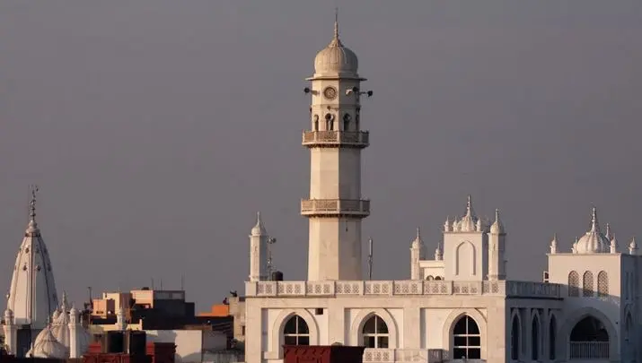

Chapter 10 of 22
Arrival in Qadian
Tuesday, November 26, 2024 · Part III

We are on the bus, traveling the final leg of our journey. Destination: Qadian.
As I look around, many are struggling to keep their eyes open, worn out from the day’s long journey. Yet, the admins remain upright, engaged in quiet discussions, planning the next steps with precision and care. Their focus is unwavering, their dedication evident. This entire journey has been a testament to their hard work and organization, ensuring everything runs smoothly, regardless of the bus they are traveling in.
Our two buses travel together, maintaining close coordination at all times. This unity is a reflection of the admins’ commitment and teamwork.
Admins and Assistants: The Pillars of the Journey
The trip is led by two brothers, Haris Mirza Sahib and Nabeel Mirza Sahib. Haris, the National Secretary of Waqf-e-Nau, serves as the executive leader, while Nabeel, the trip organizer, manages every detail of the journey. Both are incredibly professional, humble, and kind, handling every situation with down-to-earth courtesy. Every aspect of the trip is planned under the direct guidance of Huzur (aba), Markaz, and the local hosts. Their identical appearances have led to more than a few lighthearted moments, as people have mistaken one brother for the other.
We are traveling in two spacious, comfortable buses, each supported by chaperones who have done an incredible job keeping everyone organized and on schedule.
Group Chaperones and Leadership
Each group has a dedicated chaperone to keep everyone organized, focused, and safe. As one of those chaperones, I am grateful for my trusted assistant and for every leader whose quiet work allows the young travelers in our care to focus on the journey.
Their leadership—calm, resourceful, energetic, and compassionate—has fostered a spirit of unity across the entire group.
Additional Team Members
Among our group, we are blessed to have two physicians, both brothers: Dr. Mohammad Ali Mumtaz Sahib (Bus B) and Dr. Mubashir Mumtaz Sahib (Bus A). Their presence has been comforting, ensuring everyone’s well-being throughout the journey.
In Bus B, Ghalib Ut-hur Khan Sahib, representing MTA International, is capturing the spirit of the journey through pictures and videos, ensuring these memories will last a lifetime.
Also traveling in Bus A is Imam Abdullah Dibba Sahib, Sadr Khuddam-ul-Ahmadiyya USA. His presence has been a source of spiritual motivation and discipline, inspiring us to reflect deeply on the significance of this journey.
This structured team of admins, chaperones, and assistants has made it possible for us to focus on the spiritual essence of this journey while maintaining discipline and organization.
Excitement in the Air
Despite the fatigue, excitement begins to spread through the bus. We are very close to Qadian. There is no stop between us and our final destination now. The realization awakens the group as everyone starts looking out for Minaratul Masih.
To keep the mood light and spirits high, one of our young Waqifeen takes charge as an impromptu emcee. Using the bus mic, he invites everyone to recite verses from the Holy Quran, poems of Hazrat Promised Messiah (as), or couplets from the Khulafa. A few oblige enthusiastically, while others entertain the group with jokes and anecdotes. Laughter, recitations, and spontaneous conversations fill the air, but underneath it all, everyone is eagerly waiting for the first glimpse of Qadian.
Yes, those days have arrived for which we used to count days just to keep our hearts full of hope and joy!
Suddenly, someone raises an excited slogan:
Nara-e-Takbeer!
Allahu Akbar!
This is followed by:
Qadian Darul Aman Zindabad!
Long live Qadian, the house of peace!
Why the excitement? A few sharp eyes have spotted the glowing top of Minaratul Masih, shining brightly in the darkness of the early night.
And then, there it is—fully visible through the front window of the bus. The sight sends a ripple of excitement through everyone. Phones come out instantly as people begin taking pictures to send to their loved ones back home, sharing the joyous news:
We’re here. We’re finally home.
We are in Qadian.